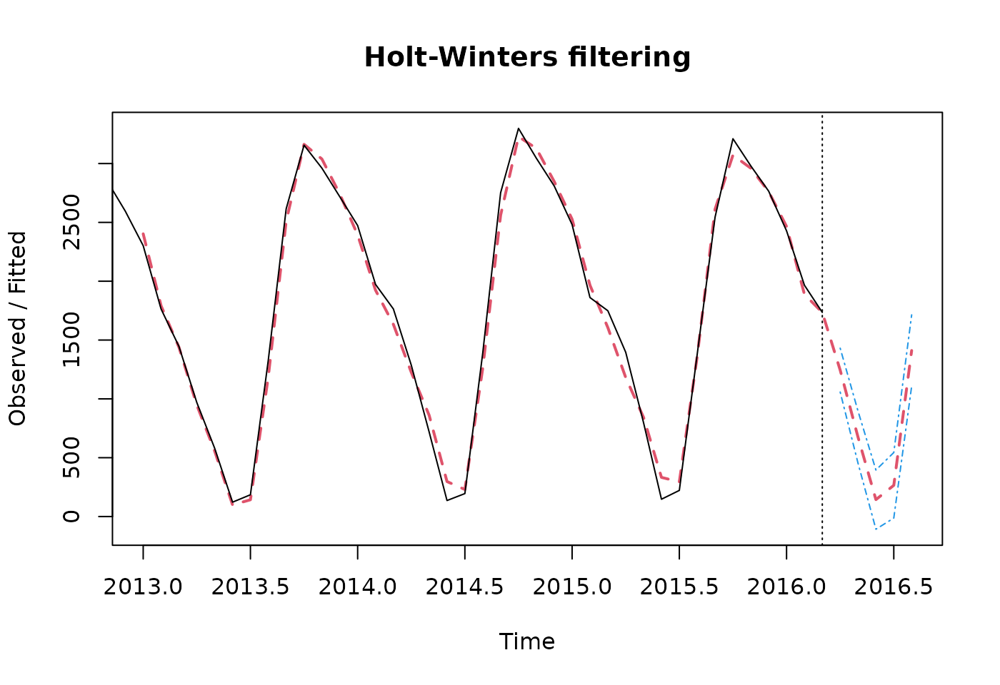
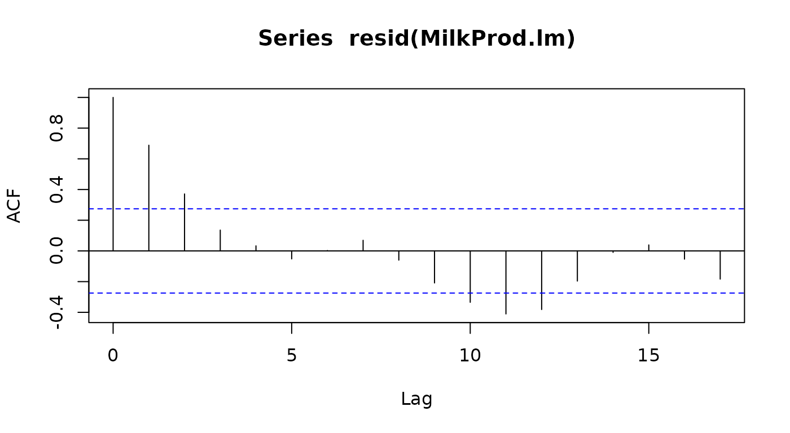
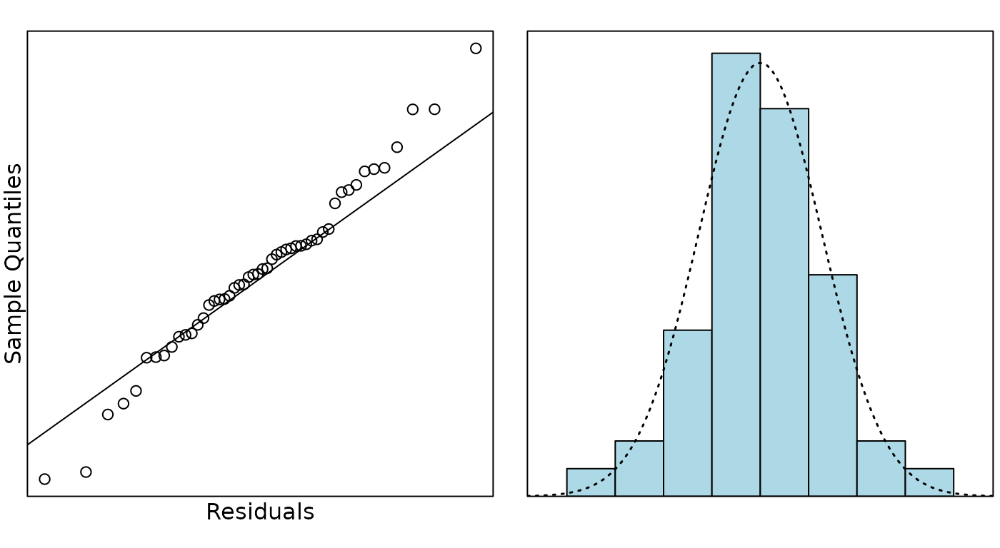

Case Study 17.4: Additional Time Series Case Study D: Milk Production Data
Source:vignettes/articles/CS17_4.Rmd
CS17_4.RmdThe data in this question refers to the average monthly production of milk in New Zealand (in 1000s of tonnes) from January 2012 until March 2016. (Data courtesy of the Dairy Company Association of New Zealand.)
It is of particular interest to describe the overall trend in production, and, in particular, how it changes from month to month. Dairy farmers typically do not milk their herds in the late autumn and earlier winter months with the the traditional `flush’ of production occuring in the spring months.
The variables are:
| Variable | Description |
|---|---|
year |
the year of production |
month |
month of the year |
production |
in 1000s of tonnes |
MilkProd.ts = ts(MilkProd.df$production, frequency = 12, start = c(2012, 1))
plot(MilkProd.ts, main = "Milk productions in 1000s tonnes")
abline(v = c(2012:2015), lty = 2)
MilkProd.stl = stl(MilkProd.ts, s.window = "periodic")
plot(MilkProd.stl)
abline(v = c(2012:2015), lty = 2)
head(MilkProd.stl$time.series, 13)## seasonal trend remainder
## Jan 2012 617.08327 1790.080 -199.163163
## Feb 2012 127.59824 1776.788 -30.386627
## Mar 2012 -72.48669 1763.497 45.989812
## Apr 2012 -466.44590 1749.903 195.543153
## May 2012 -1024.59084 1736.309 90.282220
## Jun 2012 -1616.06399 1723.367 23.697036
## Jul 2012 -1552.03718 1710.425 36.611912
## Aug 2012 -424.13555 1696.483 -54.347749
## Sep 2012 831.51611 1682.541 -78.057430
## Oct 2012 1409.61059 1661.207 -76.817840
## Nov 2012 1203.20508 1639.873 4.921737
## Dec 2012 966.74691 1630.345 -2.091944
## Jan 2013 617.08327 1620.817 64.099843
MilkProd.hw = HoltWinters(MilkProd.ts)
preds.hw = predict(MilkProd.hw, n.ahead = 5, prediction.interval = TRUE)
preds.hw## fit upr lwr
## Apr 2016 1244.4407 1430.8911 1057.99038
## May 2016 673.7034 895.0975 452.30934
## Jun 2016 143.6157 395.1449 -107.91344
## Jul 2016 265.3632 543.7847 -13.05828
## Aug 2016 1411.0278 1713.9636 1108.09194
plot(MilkProd.hw, preds.hw, lty.predicted = 2, lty.interval = 4, lwd = 2)

# start from observation 2
MilkProd2.df = MilkProd.df[-1, ]
# put the past month as an explanatory variable
MilkProd2.df = within(MilkProd2.df, {
past.prod = MilkProd.df$production[-51]
})
MilkProd.lm2 = lm(production ~ time + past.prod + month.fac, data = MilkProd2.df)
summary(MilkProd.lm2)##
## Call:
## lm(formula = production ~ time + past.prod + month.fac, data = MilkProd2.df)
##
## Residuals:
## Min 1Q Median 3Q Max
## -152.489 -37.881 0.075 27.728 164.041
##
## Coefficients:
## Estimate Std. Error t value Pr(>|t|)
## (Intercept) 521.4644 310.5383 1.679 0.101768
## time 0.6282 0.8300 0.757 0.454032
## past.prod 0.6908 0.1172 5.892 9.69e-07 ***
## month.fac2 -293.0884 63.0254 -4.650 4.35e-05 ***
## month.fac3 -156.0944 108.4736 -1.439 0.158787
## month.fac4 -408.8582 130.6755 -3.129 0.003470 **
## month.fac5 -697.7288 173.9354 -4.011 0.000292 ***
## month.fac6 -902.8208 237.4975 -3.801 0.000536 ***
## month.fac7 -430.4813 305.7098 -1.408 0.167668
## month.fac8 653.8187 298.5372 2.190 0.035080 *
## month.fac9 1130.3882 170.0994 6.645 9.62e-08 ***
## month.fac10 838.9638 54.6090 15.363 < 2e-16 ***
## month.fac11 232.5797 74.4520 3.124 0.003516 **
## month.fac12 137.8422 59.6143 2.312 0.026596 *
## ---
## Signif. codes: 0 '***' 0.001 '**' 0.01 '*' 0.05 '.' 0.1 ' ' 1
##
## Residual standard error: 74.32 on 36 degrees of freedom
## Multiple R-squared: 0.9959, Adjusted R-squared: 0.9944
## F-statistic: 675 on 13 and 36 DF, p-value: < 2.2e-16Question
Comment on the STL decomposition plot, paying particular attention to the comparison with the milk production trends stated in the introduction to the data.
Solution
The original data has clear seasonality with, perhaps, a slight increase over time. The seasonal component explains most of these data.The seasonal component shows high milk production in August - November and lowest in April - July so this is consistent with low production in late autumn/early winter and high production in spring.
There may have been a very slight drop in production in 2013 (drought?) with an increase to regular levels afterwards but this effect is very slight. There remainder (residuals) seem to indicate a high degree of auto correlation (clustering of positive and negative residuals).
Question
Using the Holt-Winters model, provide a 95% prediction interval for the average milk production for the month of April in 2016.
Solution
The Holt-Winters model predicts that, with 95% confidence, the average milk production for the month of April, 2016 would be about 1244 thousand tonnes and could be between 1058 to 1431 thousand tonnes.
Question
Which of the four components of times series; trend, cycle, seasonality and error, contributes most to describing what you observe for these data?
Solution
These data appear to be mostly explained by seasonal (monthly) effect reflecting the very seasonal nature of dairy production with high spending production and slight (or no) production in winter. Any trend effect seems very slight.
Note: Looking at the stl plot, the range of the seasonal variation is from -1500 to 1000, so 2500. The range of the trend is just 1650 to 1750, so only 100 - half of that of the remainders which estimate errors. There is too little data to see any sign of a cycle. Seasonality dominates this data.
Question
In most time series analysis we commonly encounter a lack of independence between consecutive residuals (i.e. auto-correlation).
- What would an auto-correlation of zero indicate?
- What would an auto-correlation of one indicate?
- What is the estimate of the auto-correlation for these data?
- Is there any evidence that the auto-correlation is different from the value zero?
Solution
An auto-correlation of zero would indicate errors are independent each other over time - the near past has no bearing on the future errors. I.e the usual independence assumption for the linear model.
An auto-correlation of one would indicate total dependence over time - i.e. there is no error (except for the first observation). Every observation depends on the previous observation.
The estimate of the autocorrelation is 0.6908 (from
MilkProd.lm2 output) or about 0.7 from ACF plot.
The autocorrelation is highly significant (from
MilkProd.lm2 the P-value = 9.769e-06) or P-value
.05 from ACF plot as the first lagged correlation above 5% threshold
line.